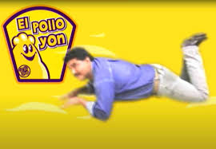

Programación Web I PRIM25
Evaluación Práctica Parcial 1
Profesora: M.C. Imelda Deyanira Hernández Martínez
Alumno(a): J. E. Alessandro Echavarría Martínez
"Quiero pollo Yon, dame Pollo Yon"

SUCURSAL POLLO YON
Av Orion #1003, San Nicolás de los Garza, Nuevo León, México